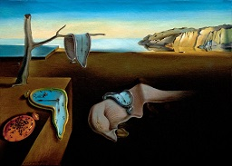
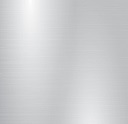
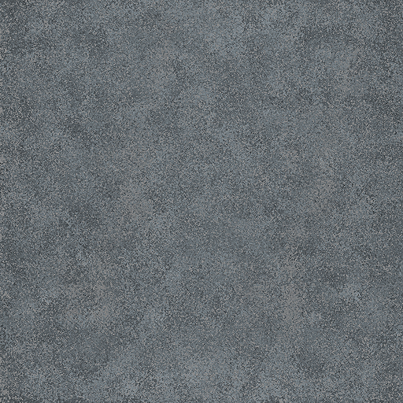
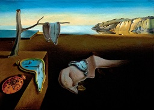
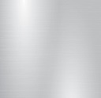
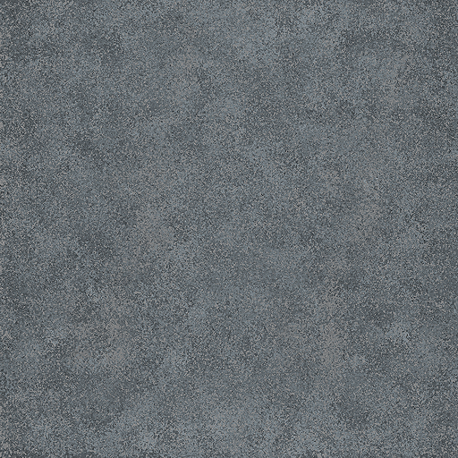

Hint: Lower the ambience to about 9 to fully appreciate the individual light sources in the scene
Hint: Increase the ambience to about 45 to fully appreciate the paintings on the wall
Ambience:
Press l to toggle the left light
Move left light:
Change red color of left-light:
Change green color of left-light:
Change blue color of left-light:
Press r to toggle the right light
Move right light:
Change red color of right-light:
Change green color of right-light:
Change blue color of right-light:
Press t to toggle the room main light
Press f to switch fan on
Left click an object to select it